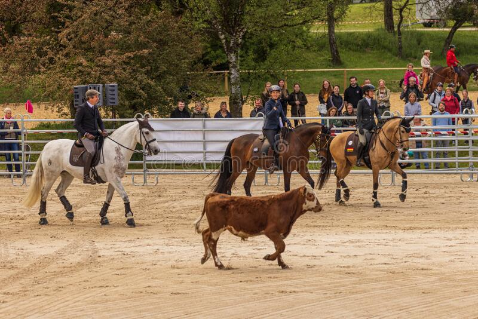

The Four Parts of Working Equitation
Dressage Trial
Ease of Handling
Speed Trial

Cattle Trial
Welcome to the ever growing sport of working equitation!
Here you can find general information on the sport
and sign up for our monthly newsletter.

Dressage Trial
Ease of Handling
Speed Trial
Cattle Trial
The sport of Working Equitation combines the best of precision riding and connection between the rider and horse.
With its roots in Europe, it is now among the fastest growing Equine sports in the USA.
This website is not real. The actual assocation in the USA is called USA Working Equitation, or USAWE. Please check out their awesome website HERE for more information about this awesome sport!
Our monthly newsletter has more tips and tricks for starting your journey with Working Equitation. Whether you are a rider or a spectator, come find out more!